.jfif)
Rolex Daytona("Paul Newman")
El rolex más caro reloj alguna vez vendido es un "Paul Newman" Rolex Daytona que pertenecía al reconocido actor cuyo apodo lleva, subastado para € 17.8 millones en 2017.

Rolex GMT-Master II
Combinando un bisel giratorio bicolor y una aguja adicional 24 horas, el GMT‑Master II se convierte en un reloj-herramienta, que muestra simultáneamente dos husos horarios para permitir a los viajeros establecer ese vínculo permanente entre el aquí y el allí.
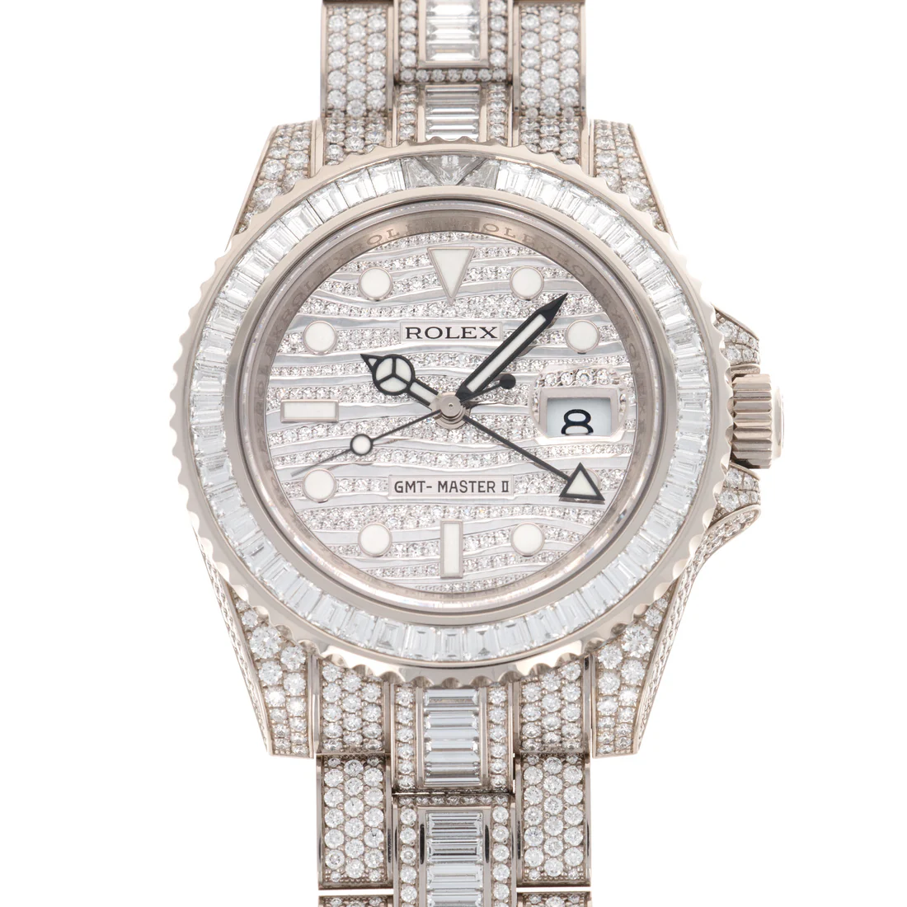
Rolex Day-Date
Presentado en 1956, el Day‑Date fue una primicia mundial. Fue el primer reloj que mostró el día de la semana con todas las letras. Elegido por numerosos líderes mundiales, el Day‑Date está disponible con una visualización del día a medida en una amplia selección de idiomas.
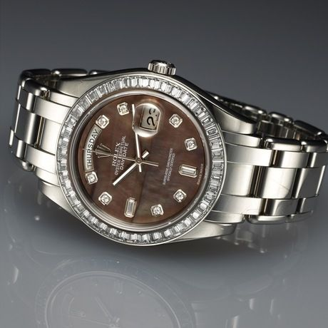
Rolex GMT-Master II
El GMT‑Master II cuenta con una aguja adicional rematada en un triángulo que completa la revolución plena en 24 horas, indicando un segundo huso horario gracias a las graduaciones del bisel. Se utiliza para la hora de referencia(hora residencia).
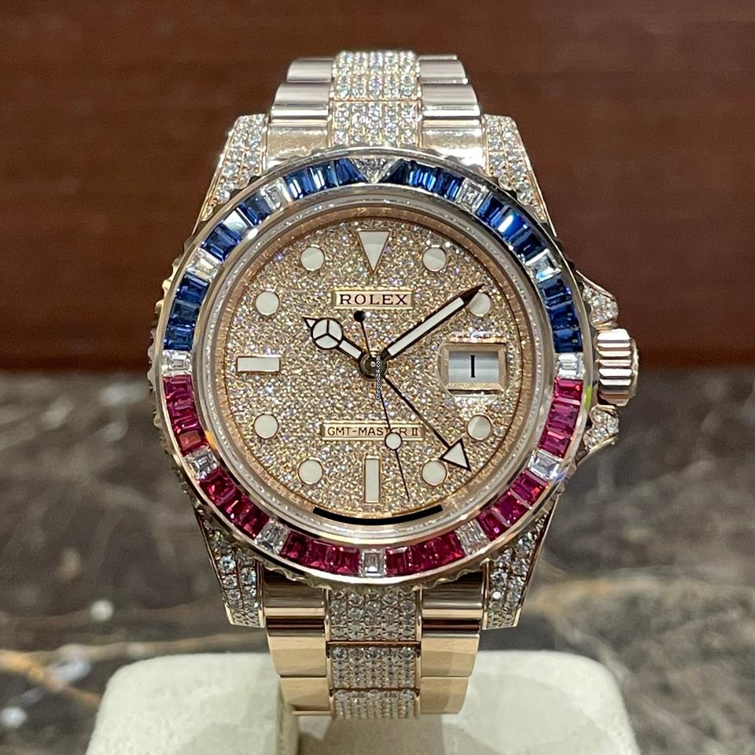
Omega Speedmaster CK29151
El reloj Omega Speedmaster CK2915-1 es ya el reloj más caro de la historia de la firma tras haber sido subastado por 3,1 millones de francos suizos en la subasta benéfica relojera Only Watch.

Omega Seamaster Dial Azul Automatic
Este reloj está equipado con un chronograph característica, una ventana de pantalla de fecha y es tanto antimagnética como anti-mantenente del agua de hasta 30 bar.
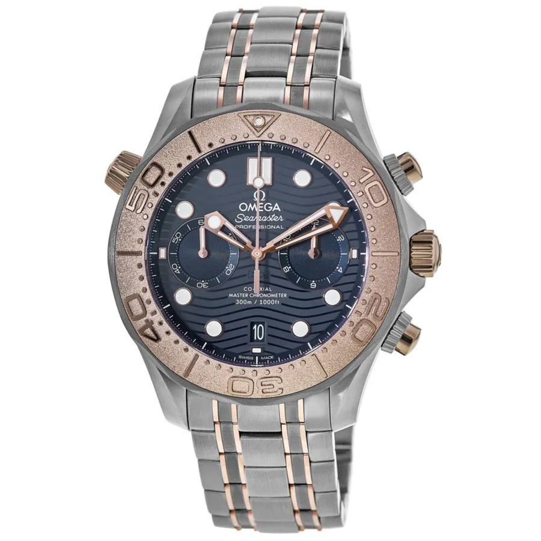
Omega Speedmaster Automatic Mnes
El reloj funciona con el movimiento mecánico co-axial de Omega característica y también presenta una función de tacímetro, así como resistencia magnética y resistencia al agua hasta 10 bar.
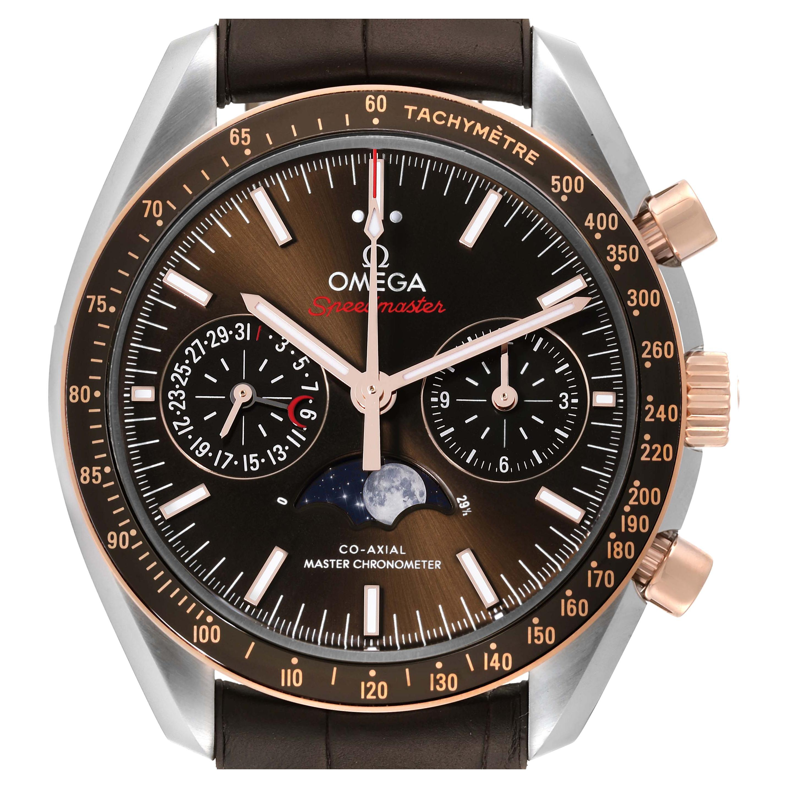
Omega Speedmaster Co-axial Chronograph(Lado oscuro de la luna)
Este reloj de pulsera viene con chronograph y funciones de taquímetro y funciona con un movimiento mecánico automático.
.avif)
Patek Philippe Grandmaster Chime
El récord actual entre los relojes de lujo lo tiene el Patek Philippe Grandmaster Chime Ref. 6300A-010 por 31,194 millones de dólares, subastado en Christie’s en Ginebra en 2019. Si busca un reloj que le encante, debería hacerse con un reloj Patek Philippe.

Patek Philippe La supercomplicación de Henry Graves Jr
Con sus dos discos, 24 complicaciones, más de 900 piezas y un peso de más de 450 gramos, este reloj de bolsillo de oro de 18 quilates superó los límites de la complejidad mecánica más allá de cualquier otro reloj que se haya producido anteriormente.
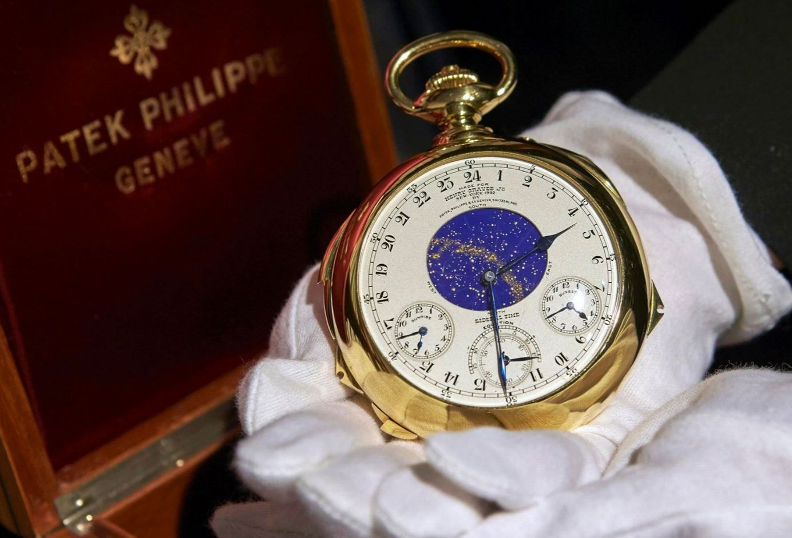
Patek Philippe 1527 Calendario perpetuo 18k oro rosa
No es simplemente el hecho de que el reloj fue producido durante la Segunda Guerra Mundial, sino también que esta pieza en particular es una máquina del tiempo para el experto coleccionista de Patek.
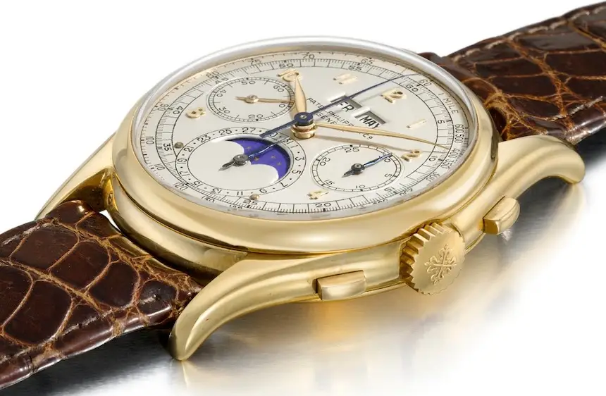
Patek Philippe Grand Complication Calibre 89
La manufactura lo presentó en 1989 cuando celebró su 150 aniversario. El reloj desde los dibujos y planos iniciales hasta la pieza final tardó 9 años en desarrollarse y fabricarse.
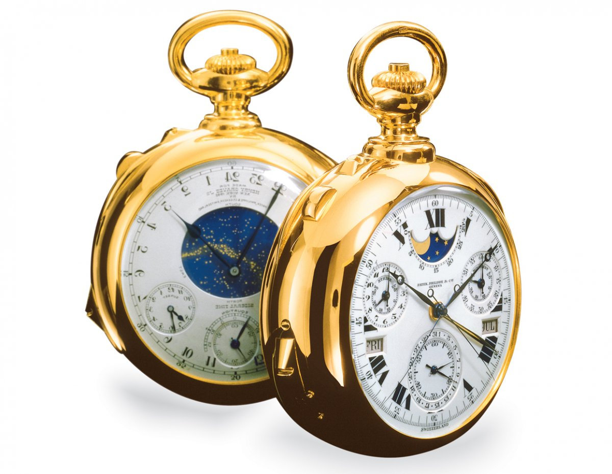
Audemars Piguet Royal Oak
En la actualidad, el reloj más caro de la firma suiza es el Audemars Piguet Royal Oak Grande Complication con un valor de unos 825 mil euros aproximadamente.

Audemars Piguet Royal Oak Jumbo Extra-Thimn
Es el descendientes más cercanos al Royal Oak original de GG en 1972. Aquella primera versión referencia 5402, para los entendidos tenía un tamaño de 39 mm, considerado jumbo en una época dominada por relojes de vestir más pequeños.
.jfif)
Audemars Piguet Royal Oak Tourbillon
Es un mecanismo diseñado para contrarrestar los efectos de la gravedad en los engranajes internos de un reloj inmóvil. Lo logra mediante un volante, un resorte y un escape que giran constantemente (de ahí lo de “torbellino”) mientras el movimiento está en marcha.
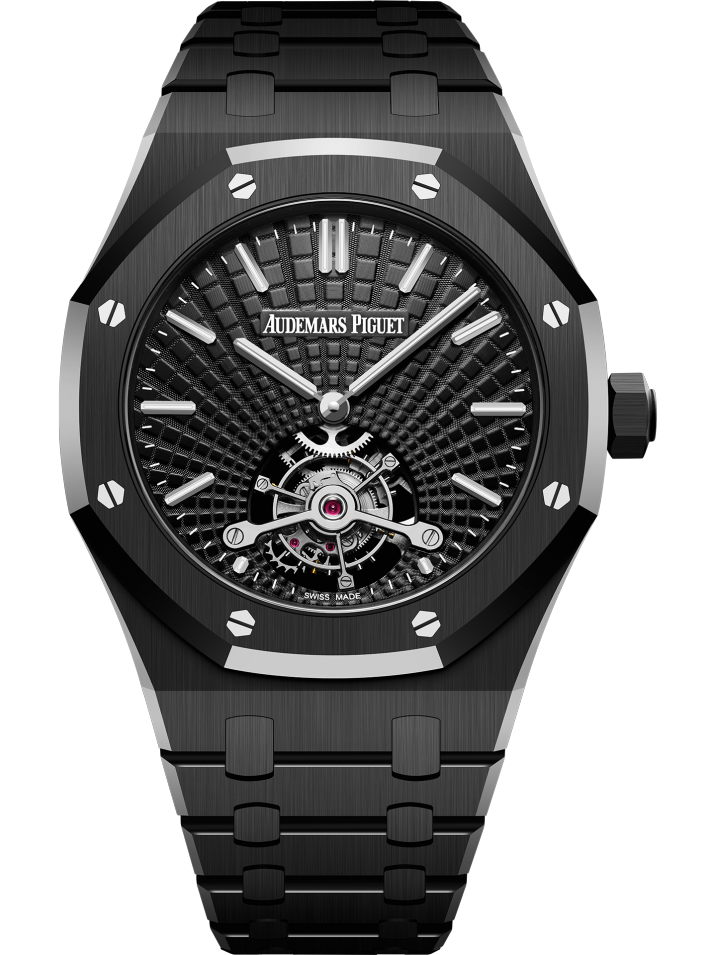
Audemars Piguet Piguet Royal Oak Perpetual Calendar
Reloj con calendario perpetuo, una memoria mecánica que sigue ciclos de 48 meses. Ajusta automáticamente el número de días de cada mes, incluyendo los cambios en febrero durante los años bisiestos.
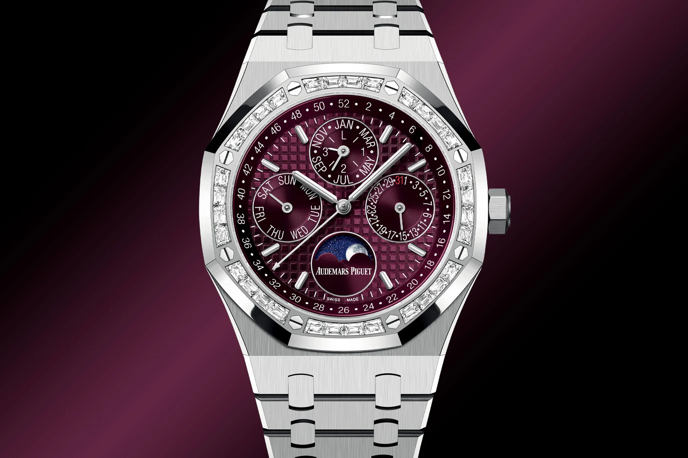
Breitling Premier B21 Chronograph Tourbillon 42
El Premier B21 Chronograph Tourbillon 42 Willy Breitling, que lleva el nombre del famoso fundador de la marca. Forma parte de la serie Premier Tourbillon, dirigida a los amantes de la relojería.

Breitling Professional Emergency Mission II Titanium
Este reloj incorpora una señal de socorro que puede transmitirse a través de frecuencias internacionales de emergencia para ayudar a identificar la ubicación exacta.
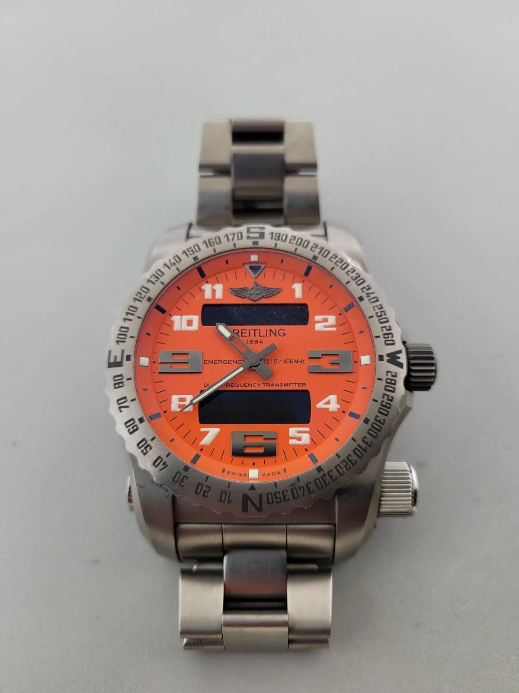
Breitling Navitimier Chronograph 43
Su bisel, que incorpora regla de cálculo, puede utilizarse tanto para realizar simples multiplicaciones, como también para otro tipo de cálculos, como el consumo de combustible.
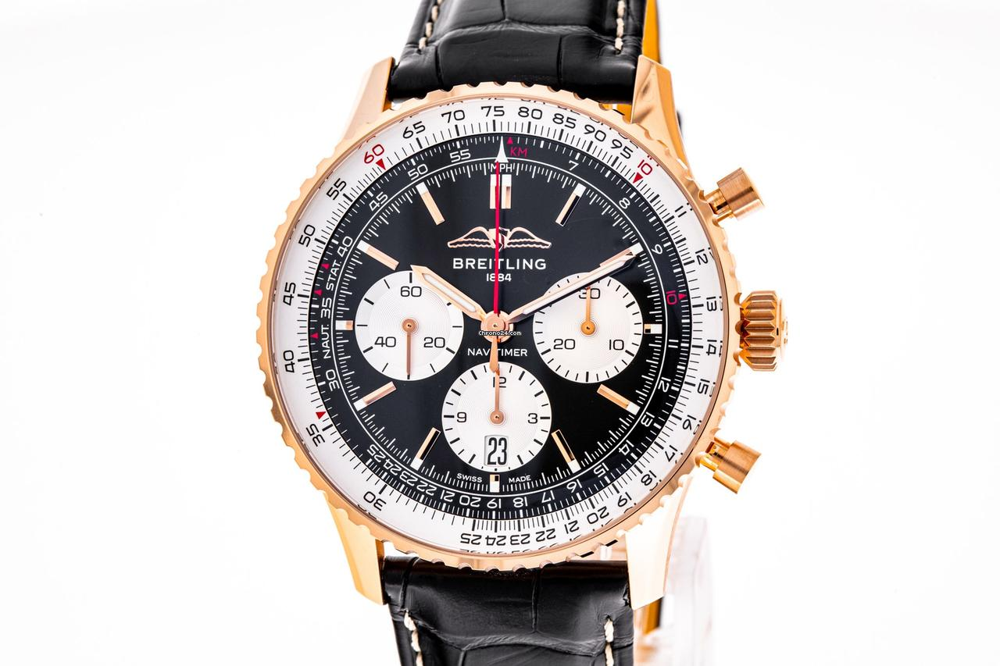
Breitling Bently Flying B
presenta una esfera con un pequeño segundero descentrado y un único minutero, mientras que las horas se indican mediante una complicación de hora saltante.
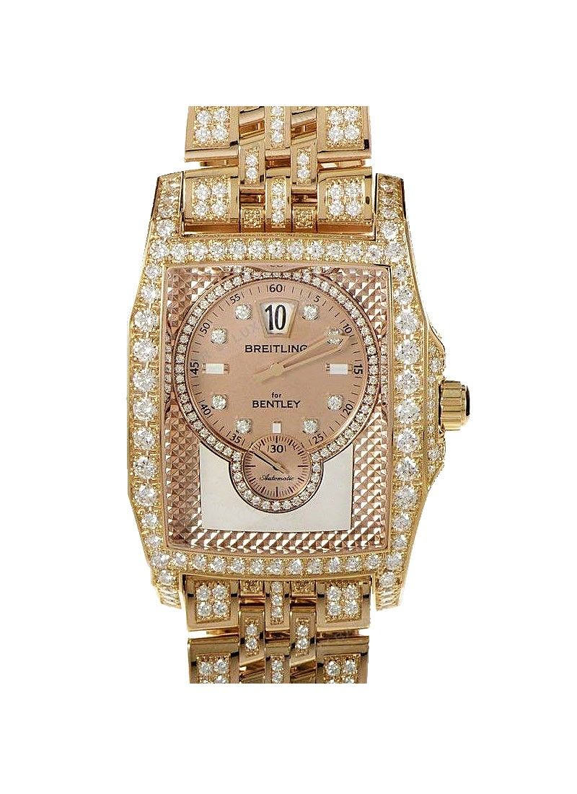
IWC Gerald Genta
Los precios de estos ejemplares sin estrenar oscilan entre los 8200 € y los 9300 €; de segunda mano cuestan alrededor de 7300 €.

IWC SCHAFFHAUSEM PORTUGIESER CRONOGRAFO
Este cronógrafo de armonioso diseño, con su escala de precisión periférica y sus totalizadores en bajorrelieve, ha sido el miembro más codiciado de la familia Portugieser desde 1998.
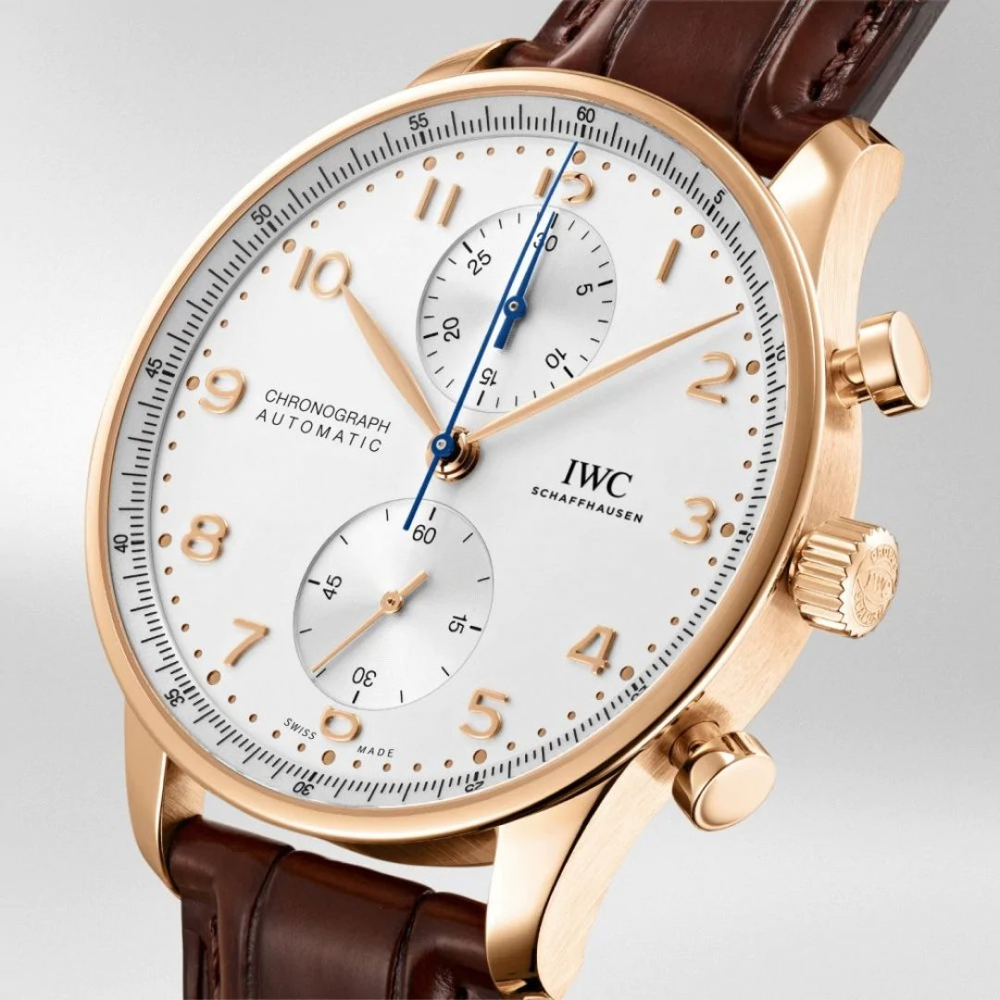
IWC SCHAFFHAUSEM AVIADOR CRONOGRAFO
Calibre 69385 de la Manufactura IWC, un movimiento de cronógrafo preciso y robusto con un clásico diseño de rueda de pilares, permite medir tiempos cronometrados o adicionales de hasta 12 horas.

Tudor Big Crown Submariner
La profundidad máxima de inmersion funcional, establecida inicialmente en los 100 metros, alcanzo los 200 con la introduccioon de la referencia 7924 en 1958.

Tudor Black Bay PRO
Calibre de manufactura MT5652 (COSC) Movimiento mecanico de cuerda automatica con rotor bidireccional Ingenieria exclusiva.
.avif)
TAG HEUER MONACO V4
El TAG Heuer Monaco V4 de platino con correa es el reloj más caro de la colección, disponible por unos 72.5000 euros. Si hablamos de precios en la colección de TAG Heuer.

TAG HEUER CARRERA CHRONOSPRINT X PORSCHE RALLYE
Inspirada en el Porsche 911 de 1965, la esfera negra brillante presenta llamativas marcas rojas, negras y beige que reflejan los colores del emblemático coche de carreras.
.avif)
Jaeger-LeColutre-Joaillerie
El Jaeger-LeCoultre-Joaillerie, tiene un costo de 26 millones de dólares. A pesar de parecer una pulsera en ella esconde un reloj. Y es que, como ya se ha mencionado, tiene el récord por ser el movimiento mecánico más pequeño del mundo.

Jaeger-LeColutre Master Control Chronograph Calendar
El reloj Master Control Chronograph Calendar en acero inoxidable incorpora un cronógrafo y un calendario completo.
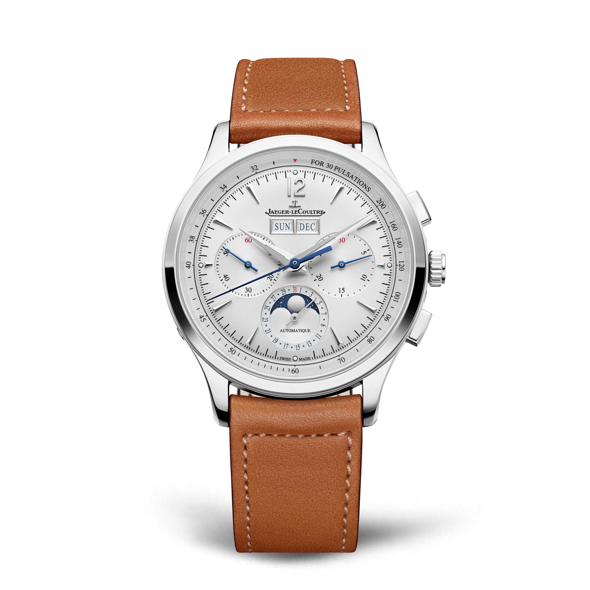
Hublot MP-05 LaFerrari
El reloj Hublot MP-05 LaFerrari es considerado el más costoso de la historia. Este reloj sorprende por su complejidad y originalidad, con un diseño que se asemeja a los detalles técnicos del motor de un automóvil Ferrari.

Hublot Titanium King Gold
El titanio se utiliza mucho en Hublot, especialmente debido a su ligereza. Cuenta con la relación resistencia/peso más elevada de todos los metales, lo que lo convierte en un material muy apreciado en aeronáutica.
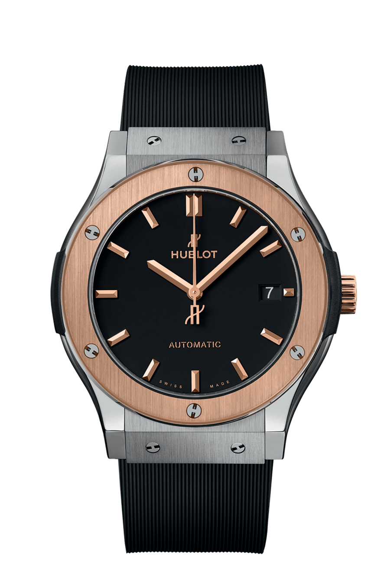